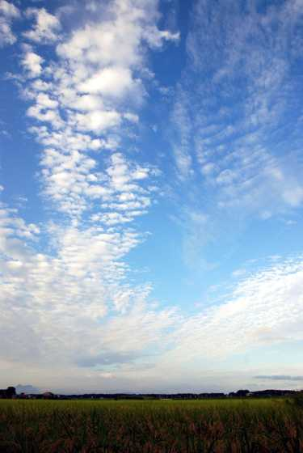
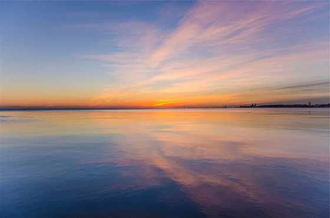
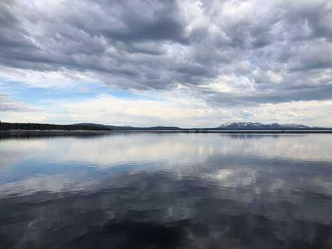
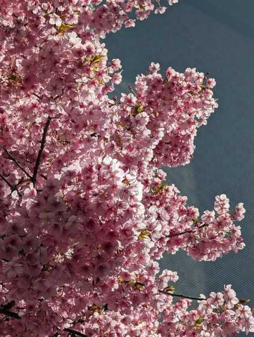
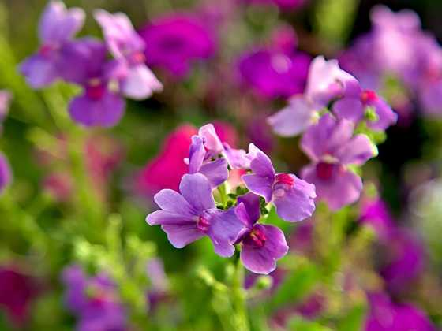
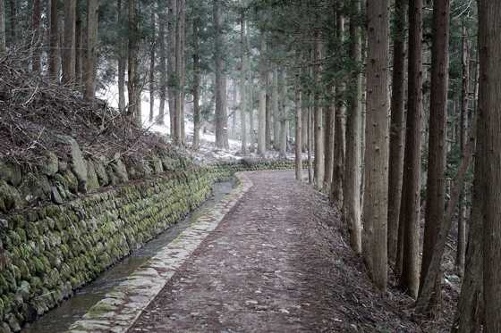
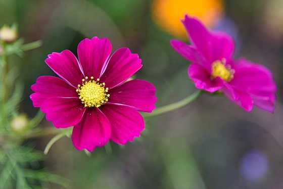
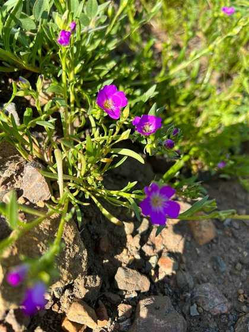
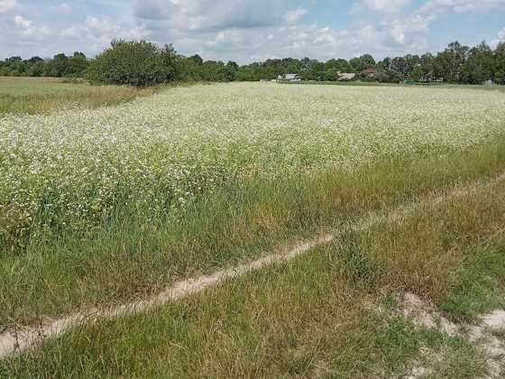
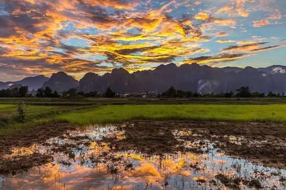

日日舎
おばあちゃんの家の、もうひとつの居場所。
入る前とちょっと違う自分で、帰れるように。
お店のこと
ABOUT
日日舎は2025年5月、福島県田村市船引町春山にオープンしたカフェです。建物は、店主・西尾直子さんの祖母が住んでいた家を改装したものです。
郡山市出身の西尾さんは、千葉県で暮らしたのち福島へ。幼い頃に祖母と交わした「いつか一緒に暮らそう」という約束と、本を読んだり考え事をしたりできる「一人になれる場所」がなかなか見つからなかった想いが、この家での開業につながったと紹介されています。
祖母は、一人暮らしを支えてくれた地元の人に恩返しをしたいと話していたそうです。受けた親切を次の誰かへ渡す「恩送り」を大切にし、「入る前とちょっと違う自分で店を出てもらえたら」と語っています。




店内は大きな窓から陽ざしと風が入る10席ほど。庭にはシャクナゲやツツジなど季節の草花があると紹介されています(2025年開店時の取材記事より)。店主がお一人で接客されるため、時間に余裕を持ってのご来店が案内されています。
制作側のイメージ:「日日」という名のとおり、毎日の暮らしの延長にそっと寄り添う場所。この色合いと文章は、そのイメージから組み立てました(店名の由来は確認できていません)。
口コミ
VOICE
大きな窓の近くで、ゆっくり本を読みました。時間がやさしく流れていきます。
旬の野菜のランチがおいしくて、季節ごとに通いたくなります。
ひとりでも、友人とでも居心地がよく、帰り道は少し気持ちが軽くなりました。
※上記は制作側が作成したイメージ例であり、実際のお客様の声ではありません。



アクセス
ACCESS
- 住所
- 〒963-4315 福島県田村市船引町春山追分1-1
- 電話
- 準備中
- 営業時間
- 準備中
- 定休日
- 準備中
- 駐車場
- 準備中


最新の営業日・お知らせはInstagramをご覧ください。
Instagram @nichinichi.sha
掲載の写真はフリー素材のイメージであり、店舗の実際の様子ではありません。実際の店内・料理の写真は、ご提供いただいたものに差し替えます。